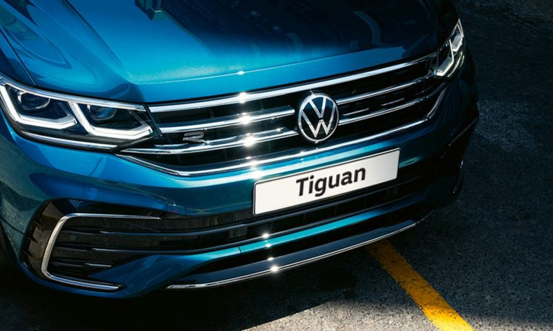
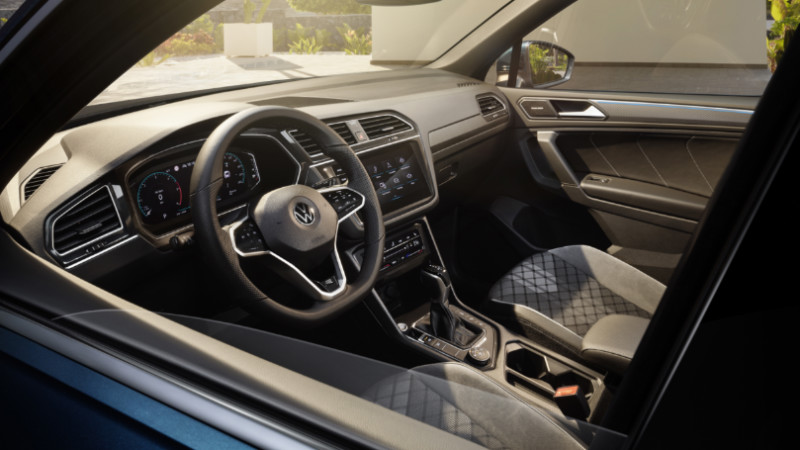
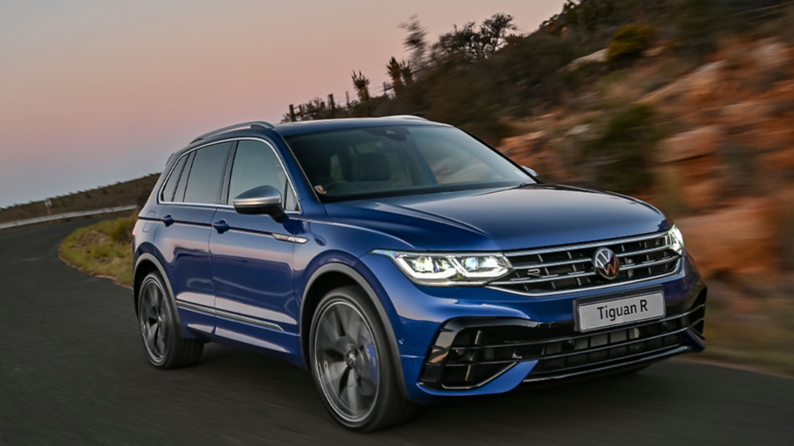

LKSWAGEN
LKSWAGEN
Tiguan
Tiguan, mümkün olanın ötesinde.
Avrupa’nın en çok satılan SUV’u ve Volkswagen’in son yıllarda dünya çapındaki en popüler modeli olan Tiguan, güçlü tasarım dokunuşları ve en güncel otomotiv teknolojileri kullanılarak baştan sona yenilendi! Üstün Alman mühendisliğinin bir sonucu olan kusursuz sürüş özellikleri ve tartışılmaz Volkswagen sağlamlığıyla Tiguan, şimdi her zamankinden daha konforlu ve daha sezgisel.
Tasarım

Göz kamaştırmayan, göz alıcı bir teknoloji.
IQ. LIGHT – LED Matrix farlar, aktif sürüş güvenliğini en üst düzeyde desteklerken Tiguan'ın tüm ihtişamıyla parlamasına da katkı sağlar. (E) (R) Sistem, her bir far grubunda yer alan çok sayıda LED modülü bağımsız olarak açıp kapatabilir. Bu sayede, farklı hız, hava ve yol koşulları altında en optimum aydınlatma otomatik olarak sağlanır.1 Üstelik Dinamik Uzun Far Asistanı "Dynamic Light Assist" (O) ile birleştiğinde bu farlar, uzun hüzmeli farlar ile ilerlerken merkezi kamera sistemi tarafından tespit edilen trafikteki diğer araçların sürücülerinin gözlerini kamaştırmamak için de bu LED modüllerini ayrı ayrı kapatıp açabilir.
KONFOR
Sezgilerinizle kontrol edin.
Dış tasarımı gibi iç mekanı da tamamen güncellenen Tiguan, sürücüsüne yenilikçi ve çığır açan özelliklerle donatılmış, yakınlaşma sensörü ve “Touch Slider” gibi sezgisel kumanda yöntemlerini destekleyen yepyeni bir dijital kokpit sunar. 26 cm (10,25”) genişliğindeki, yüksek çözünürlüklü 10,25” Dijital Gösterge Paneli “Digital Cockpit Pro” (E) (R), sürüş ile ilgili önemli bilgileri direkt olarak sürücünün görüş alanına yansıtır. Merkezi bilgi ve eğlence sistemi ekranı gibi dokunmatik yüzeylere sahip, fiziksel tuş barındırmayan çok fonksiyonlu deri direksiyonun yanı sıra, 3 Bölgeli Dokunmatik Klima “Climatronic” (L) (E) (R) sisteminin de kumandaları tamamen yeni, tamamen sezgisel!
Teknoloji

Esnek, verimli ve güçlü.
Tiguan’ın TSI motorları güçlü olduğu kadar ekonomik de. Bu nedenle otomobil kullanmayı seven; fakat yakıt tüketimini düşük tutmak isteyenler için Tiguan TSI, mükemmel bir seçenek. Turboşarjlı Kademeli Enjeksiyon "TSI" teknolojisi, turbo boşluğuna sahip olmayan, en alt devirlerde dahi devreye girebilen hafif ve etkin bir egzoz turboşarjı ile Volkswagen'in geçmiş FSI motorlarından gelen direkt benzin enjeksiyon sistemini birleştirir. Bu sayede çok daha küçük motor hacimlerinden, çok daha fazla beygir gücü (PS) ve çekiş gücü (Tork) elde edilir. Defalarca Uluslararası Yılın Motoru "Engine of the Year" ödülü kazanan Volkswagen'in efsanevi TSI motorlarını denemeden, yüksek performansı, düşük tüketimle birleştiren gerçek bir modern benzinli motorla karşılaşmamışsınız demektir.
Güvenlik

Otomatik ve güvenli takip mesafesi.
Adaptif Hız Sabitleyici "ACC", önceden ayarladığınız hız limitini geçmenizi önler¹ ve önünüzde seyreden araçla aranızdaki mesafeyi korumanızı sağlar². Böylece uzun yolculuklarda sürücünün üzerine binen yük azalır, güvenlik ve konfor azami düzeyde artar. Bu sistem sayesinde ayrıca, dur-kalk trafikte ilerlerken Tiguan tamamen otomatik olarak fren yapıp öndeki aracın arkasında durur ve bu araç ilerlemeye başladığında yine otomatik olarak yeniden hareket etmeye başlar (Çift Kavramalı Şanzıman "DSG" ile). (O) 1 Maksimum 210 km/s hıza kadar. 2 Hız limitleri dahilinde.
Volkswagen Hakkında Modeller Ve Fiyatlar İletişim Sosyal Medya
İkinci El Araçlar Tüm Modeller Yetkili Satıcı Facebook
Ticari Araçlar SUV Modeller Online Servis Instagram
Satış Sonrası Hizmetler Araç Fiyatları İletişim Ve Destek Twitter
Kampanyalar Aksesuarlar Bilgi Formu Youtube
|